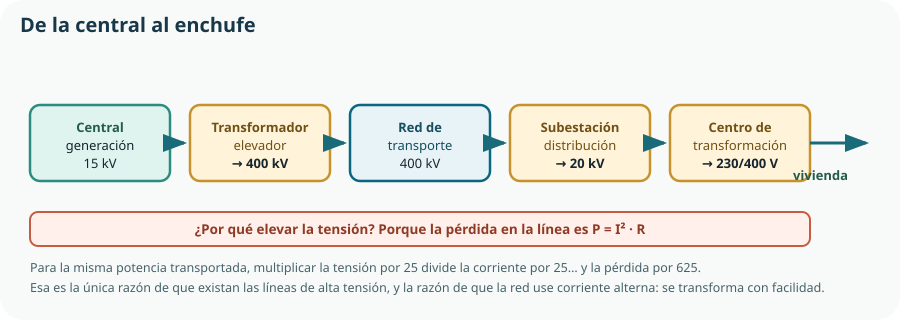

Empieza el último bloque, y es el que responde a la pregunta que justifica todo el proyecto: ¿cuánto ahorra de verdad el KR-1? Para contestarla hace falta saber de dónde viene la energía, cuánta se pierde por el camino y cómo se cuenta lo que cuesta. Este tema se imparte en la primera evaluación, y no al final del curso, por una razón práctica: no depende de nada previo y es el que se queda sin dar cuando el bloque energético se deja para junio.
- distinguir energía de potencia y manejar el julio, el vatio hora y sus múltiplos;
- clasificar las fuentes de energía en renovables y no renovables, y en primarias y finales;
- describir cómo funciona cada tipo de central y qué energía convierte;
- calcular el rendimiento de una conversión y explicar por qué hay un límite físico;
- explicar la cadena de transporte y distribución y por qué se eleva la tensión;
- describir cómo se forma el precio de la electricidad y qué es el mercado diario;
- calcular el coste energético de un consumo y comparar dos alternativas;
- aplicar criterios de ahorro con datos, distinguiendo lo que ahorra de lo que lo parece;
- valorar la dependencia energética y relacionarla con los Objetivos de Desarrollo Sostenible.
1. Energía, potencia y unidades
Es la distinción que hay que tener clara antes de nada, porque casi todos los errores del bloque nacen de confundirlas. Ya apareció en el Tema 10; aquí se usa a escala de vivienda y de país.
Potencia
Energía por unidad de tiempo: lo rápido que se consume. Se mide en vatios. Es lo que caracteriza a un aparato: un horno de 2 000 W.
Energía
Potencia por tiempo: cuánto se consume en total. Se mide en julios o en vatios hora. Es lo que se paga: 0,5 kWh de horno.
E = P · t 1 kWh = 1000 W durante 1 hora = 3,6 · 10⁶ J
| Cantidad | Energía | Equivale a |
|---|---|---|
| El KR-1 en un día | 4 Wh | Una bombilla LED de 8 W durante media hora. |
| Cargar un móvil | 18 Wh | Cuatro días y medio del KR-1. |
| Una ducha de agua caliente | 2 kWh | Quinientos días del KR-1. |
| Una vivienda al año | 3 000 kWh | La media española por hogar. |
| Un coche eléctrico, carga completa | 60 kWh | Una semana entera de una vivienda. |
| España en un año | 250 TWh | Ochenta millones de viviendas como la media. |
2. Fuentes de energía: obtención y clasificación
| Fuente | Tipo | De dónde viene | Limitación principal |
|---|---|---|---|
| Carbón, petróleo y gas | No renovable, fósil | Restos orgánicos fosilizados durante millones de años. | Agotables y emisoras de CO₂. |
| Nuclear de fisión | No renovable | Ruptura de núcleos de uranio. | Residuos de larga vida y combustible finito. |
| Hidráulica | Renovable | Energía potencial del agua embalsada. | Depende de la lluvia; altera los ríos. |
| Eólica | Renovable | Energía cinética del viento. | Intermitente y poco predecible. |
| Solar fotovoltaica | Renovable | Conversión directa de la luz en electricidad. | Solo de día; depende de las nubes. |
| Solar térmica | Renovable | Calor del sol, para agua caliente o para vapor. | Igual que la anterior. |
| Biomasa | Renovable | Materia orgánica: restos agrícolas, forestales o residuos. | Requiere superficie; emite al quemarse. |
| Geotérmica | Renovable | Calor del interior de la Tierra. | Solo viable en determinados lugares. |
3. Centrales de generación eléctrica
Casi todas las centrales hacen lo mismo: mover un alternador. La diferencia está en qué lo mueve, y eso es lo que conviene recordar en lugar de una lista de nombres.
| Central | Cadena de conversión | Rendimiento típico | Regulable |
|---|---|---|---|
| Térmica de carbón | Química → calor → vapor → mecánica → eléctrica | 35–40 % | Lentamente |
| Ciclo combinado de gas | Química → gases → mecánica, y el calor sobrante hace vapor | 55–60 % | Sí, con rapidez |
| Nuclear | Nuclear → calor → vapor → mecánica → eléctrica | 33–36 % | Muy poco: funciona continuamente |
| Hidráulica | Potencial → cinética → mecánica → eléctrica | 85–92 % | Sí, en segundos |
| Eólica | Cinética del viento → mecánica → eléctrica | 35–45 % del viento disponible | No: depende del viento |
| Fotovoltaica | Radiación → eléctrica, sin partes móviles | 18–23 % | No: depende del sol |
| Termosolar | Radiación → calor → vapor → mecánica → eléctrica | 15–20 % | Parcialmente, con almacenamiento de sales |
4. Rendimiento de la conversión
η = Eútil / Eaportada siempre menor que 1; el resto se convierte en calor
Y cuando hay varias etapas, los rendimientos se multiplican, exactamente como en el reductor del Tema 9.
| Etapa | Rendimiento | Acumulado |
|---|---|---|
| Extracción y transporte del gas | 0,92 | 0,92 |
| Central de ciclo combinado | 0,57 | 0,52 |
| Transporte y distribución | 0,93 | 0,49 |
| Fuente de alimentación y regulador | 0,80 | 0,39 |
| Total | — | 0,39 |
5. Transporte y distribución

Ptransportada = V · I para la misma potencia, más tensión significa menos corriente
Pperdida = I² · R y la pérdida cae con el cuadrado de esa reducción
| Tensión | Corriente | Pérdida | % perdido |
|---|---|---|---|
| 20 kV | 5 000 A | 125 MW | Imposible: más que la potencia transportada |
| 132 kV | 758 A | 2,9 MW | 2,9 % |
| 400 kV | 250 A | 0,31 MW | 0,31 % |
6. El mercado eléctrico
El currículo pide estudiar «sistemas y mercados energéticos». Y hay una idea que lo explica casi todo: como la electricidad no se almacena, su precio no lo fija el coste medio de producirla, sino el coste de la última central que hace falta encender.
Para cada hora del día siguiente se estima cuánta potencia hará falta, a partir del histórico, el calendario y la previsión meteorológica.
Cada una indica cuánta energía puede aportar y a qué precio. Las renovables ofertan casi a cero: su combustible es gratis.
Primero renovables y nuclear, después hidráulica, y al final el gas, que es la más caro de operar.
Se aceptan ofertas en ese orden hasta que la suma iguala lo que hace falta.
Todas cobran ese precio, llamado precio marginal. De ahí que un día de mucho viento el precio se hunda, y un día sin viento suba aunque las renovables sigan produciendo lo mismo.
7. Calcular lo que cuesta
El currículo pide «cálculo de costos» —así, en el texto oficial— y es el ejercicio que convierte este bloque en ingeniería en lugar de cultura general.
coste = E · precio E en kWh y precio en €/kWh
| Aparato | Potencia | Uso | Energía anual | Coste |
|---|---|---|---|---|
| Bombilla incandescente de 60 W | 60 W | 4 h/día | 88 kWh | 15,80 € |
| La misma luz en LED | 8 W | 4 h/día | 12 kWh | 2,10 € |
| Nevera A | — | Continuo | 200 kWh | 36,00 € |
| Aparatos en espera | 15 W | 24 h/día | 131 kWh | 23,60 € |
| Termo eléctrico | 1 500 W | 3 h/día | 1 642 kWh | 295,60 € |
| El KR-1 | — | Continuo | 1,5 kWh | 0,26 € |
Comparar dos alternativas: el periodo de retorno
periodo de retorno = inversión / ahorro anual en años; cuanto menor, mejor inversión
| Medida | Inversión | Ahorro anual | Retorno |
|---|---|---|---|
| Cambiar 10 bombillas a LED | 30 € | 137 € | 0,2 años |
| Regleta con interruptor para el espera | 15 € | 20 € | 0,8 años |
| Aislar la fachada | 8 000 € | 450 € | 17,8 años |
8. Criterios y técnicas de ahorro
La medida más eficaz y la más barata: apagar lo que no se usa, eliminar consumos en espera, aprovechar la luz natural. Coste cero.
Aislar, sellar, proteger del sol. Actúa sobre la causa: la mejor calefacción es la que apenas hace falta. Es el Tema 22.
Sustituir un equipo por otro que da el mismo servicio con menos energía: LED, bomba de calor, electrodoméstico de clase alta.
Consumir cuando la energía es más barata y más limpia: poner la lavadora al mediodía si hay fotovoltaica, o de noche según la tarifa.
Autoconsumo fotovoltaico. Es lo último de la lista, y no lo primero: generar para alimentar un despilfarro es la peor inversión posible. Es el Tema 23.
9. Dependencia energética y sostenibilidad
La dependencia energética es la fracción de la energía que un país necesita importar. España importa históricamente en torno al 70 % de su energía primaria, porque no tiene petróleo ni gas y su carbón es escaso. Eso tiene tres consecuencias que no son abstractas.
Económica
El precio de la energía depende de mercados internacionales que no se controlan, y una subida se traslada a toda la economía.
Estratégica
Depender del suministro de terceros países condiciona decisiones políticas, como se ha visto en los últimos años.
Ambiental
La energía importada es mayoritariamente fósil, con sus emisiones asociadas.
Los Objetivos de Desarrollo Sostenible que toca este bloque
| Objetivo | Qué pide | Dónde aparece en el curso |
|---|---|---|
| ODS 6 · Agua limpia y saneamiento | Acceso al agua y uso eficiente. | El KR-1 entero; instalaciones de agua del Tema 21. |
| ODS 7 · Energía asequible y no contaminante | Acceso, eficiencia y renovables. | Este tema y los temas 22 y 23. |
| ODS 9 · Industria, innovación e infraestructura | Infraestructura resiliente e industria sostenible. | Bloques A y B. |
| ODS 12 · Producción y consumo responsables | Uso eficiente de recursos y menos residuos. | Ciclo de vida de los temas 2 y 5. |
| ODS 13 · Acción por el clima | Reducción de emisiones. | Todo el Bloque G. |
Comprueba lo que has aprendido
Este tema se demuestra con cálculos de energía y de coste bien planteados, no con una lista de centrales.
| Aspecto | Qué debes demostrar | Evidencias posibles |
|---|---|---|
| Energía y potencia | Que las distingues y manejas las unidades sin errores. | Conversión entre julios y kWh, y un consumo propio calculado con su orden de magnitud comentado. |
| Generación | Que explicas la cadena de conversión de cada central y por qué unas son regulables. | Comparación de tres centrales por rendimiento, regulabilidad e impacto. |
| Rendimiento | Que encadenas rendimientos y calculas la energía primaria equivalente. | Cadena completa desde la fuente hasta un consumo tuyo, con el rendimiento global. |
| Transporte | Que justificas la alta tensión con números. | Cálculo de pérdidas a dos tensiones distintas para la misma potencia. |
| Mercado y coste | Que explicas el precio marginal y calculas costes y periodos de retorno. | Consulta de los datos reales de una hora concreta y tres medidas comparadas por retorno y vida útil. |
| Ahorro | Que aplicas la escalera en su orden y detectas una medida que no ahorra. | Propuesta de cinco medidas ordenadas y una medida popular desmontada con números. |
Ejercicio revelador: busca el precio de la electricidad de hoy hora a hora y localiza la diferencia entre la hora más barata y la más cara. Con ese dato, calcula lo que ahorraría una vivienda al año por poner la lavadora en la hora buena. El resultado sorprende en las dos direcciones.
Glosario del tema
- Alternador
- Máquina que convierte energía mecánica en energía eléctrica; está en casi todas las centrales.
- Ciclo combinado
- Central de gas que aprovecha además el calor de los gases de escape para generar vapor, con lo que mejora su rendimiento.
- Dependencia energética
- Fracción de la energía que un país necesita importar.
- Energía final
- Energía tal como llega al consumidor: la electricidad del enchufe.
- Energía primaria
- Energía tal como se extrae de la naturaleza, antes de transformarla.
- Energía útil
- Parte de la energía final que realmente realiza el servicio deseado.
- Generación distribuida
- Producción de energía cerca del punto de consumo, con lo que se reducen las pérdidas de transporte.
- Intermitencia
- Variabilidad no controlable de la producción de una fuente renovable.
- Kilovatio hora
- Unidad de energía equivalente a mil vatios durante una hora; es lo que se factura.
- Periodo de retorno
- Tiempo que tarda una inversión en pagarse con el ahorro que genera.
- Potencia contratada
- Potencia máxima que un suministro permite consumir; se paga con independencia del consumo.
- Precio marginal
- Precio de la última oferta aceptada en el mercado diario, que cobran todas las centrales que han entrado.
- Rendimiento
- Cociente entre la energía útil obtenida y la energía aportada.
- Renovable
- Fuente que se repone a escala de tiempo humana; no implica ausencia de impacto.
- Subestación
- Instalación donde se transforma la tensión entre niveles de la red.
Resumen esencial
- La potencia es lo rápido que se consume y la energía es cuánto: se paga la energía, en kilovatios hora, y «kW/h» no significa nada.
- El KR-1 gasta en un verano menos que una ducha: es un proyecto de ahorro de agua, no de energía, y saber qué magnitud importa es parte del criterio.
- Las fuentes se clasifican en renovables y no renovables, y la energía en primaria, final y útil; ahorrar en el consumo es donde más se multiplica el efecto.
- Renovable no significa inagotable ni inocua: se compara el ciclo de vida completo, no la etiqueta.
- Casi todas las centrales mueven un alternador; la fotovoltaica es la excepción y convierte la luz directamente.
- Como la electricidad no se almacena, lo importante de una central no es solo su rendimiento sino si es regulable.
- Los rendimientos se multiplican: los 4 Wh del KR-1 exigen unos 10 Wh de energía primaria.
- El rendimiento de una térmica no es bajo por falta de ingenio: hay un límite físico que depende de las temperaturas de trabajo.
- Se eleva la tensión porque la pérdida crece con el cuadrado de la corriente; y se usa alterna porque solo así se transforma con facilidad.
- El precio de la electricidad lo fija la última central que hace falta encender, y por eso cambia cada hora.
- En la factura, la energía es solo una parte: también se paga potencia contratada, peajes e impuestos.
- Lo que está encendido todo el año importa más que lo que consume mucho un rato: el tiempo casi siempre gana.
- El periodo de retorno se pone junto a la vida útil y a lo que la medida aporta además del dinero.
- La escalera del ahorro es no consumir, reducir la demanda, mejorar la eficiencia, desplazar el consumo y solo al final generar.
- Toda medida de ahorro se comprueba con números: hay varias muy populares que no ahorran.
- Las renovables son también una cuestión de independencia, y la energía que no se consume es la más autóctona de todas.
- Citar un Objetivo de Desarrollo Sostenible sin medir nada es decoración: el KR-1 puede reclamar el ODS 6 porque tendrá el dato del agua.
Fuentes y recursos fiables
- [1] Red Eléctrica de España. Operación del sistema eléctrico, mezcla de generación y pérdidas de la red.
- [2] Red Eléctrica — Seguimiento de la demanda en tiempo real. Demanda, generación por tecnología y emisiones, hora a hora.
- [3] Comisión Nacional de los Mercados y la Competencia. Estructura de la factura, peajes y funcionamiento del mercado.
- [4] IDAE — Instituto para la Diversificación y Ahorro de la Energía. Guías de ahorro, consumos por uso y datos de eficiencia.
- [5] Ministerio para la Transición Ecológica y el Reto Demográfico. Balances energéticos y dependencia energética.
- [6] Naciones Unidas — Objetivos de Desarrollo Sostenible (en español).
- [7] Decreto 64/2022, de 20 de julio (BOCM). Currículo de Tecnología e Ingeniería I, bloque G y criterio 6.1.